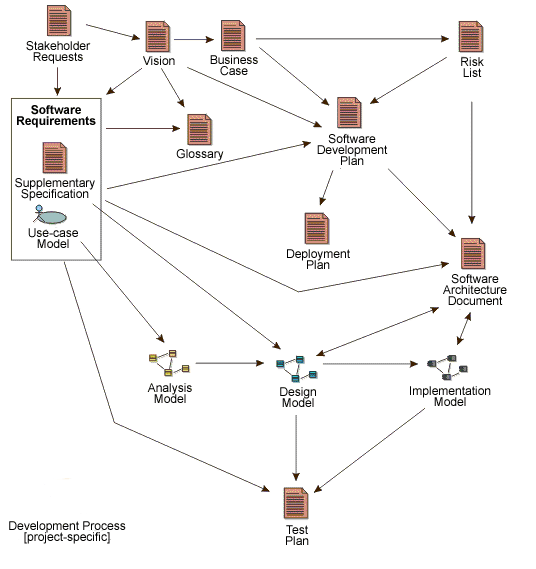

Work Product
A Work Product is a general abstraction that represents something resulting from the process. Work Products
include:
Tasks have input and output Work Products. Roles use Work Products to perform Tasks, and produce other Work Products in
the course of performing Tasks. Work Products are the responsibility of a single Role, making responsibility easy to
identify and understand, and promoting the idea that every piece of information produced in the process requires the
appropriate set of skills. Even though one Role may "own" the Work Product, other Roles will use the Work Product,
perhaps even updating it if the Role has been given permission to do so.

Popular Work Products in Software Development, and the approximate dependency relationships between them.
Note that "Work Product " is the term used to describe what other processes denote using terms such as
Artifact, work unit, and so on. In UMA, Deliverables are only considered to be the subset of all
Work Products that will end up being delivered into the hands of the customers and users, usually as part of a formal
or contractually agreed hand-over.
|